OASIS: Object-Aware Page Management for Multi-GPU Systems 深度解读
作者：Yueqi Wang, Bingyao Li, Mohamed Tarek Ibn Ziad, Lieven Eeckhout, Jun Yang, Aamer Jaleel, Xulong Tang
会议/年份：IEEE International Symposium on High Performance Computer Architecture (HPCA), 2025
一句话总结：OASIS 把 multi-GPU UVM 的 page management 从“所有页统一策略”推进到“按运行时 object pattern 动态选策略”，用很小的 object-level 元数据在多数场景中接近理想性能，并比 per-page 学习方案 GRIT 更简单。
一、问题定义
这篇论文属于非 First 类型：multi-GPU Unified Virtual Memory (UVM) 下的 page placement / migration 问题已经被研究多年，系统也已经有 on-touch migration、access counter-based migration、page duplication 等机制。OASIS 的切入点不是重新发明 UVM，而是指出这些机制在现有系统里通常以统一策略作用到所有 page，忽略了应用内部不同 data object 的访问差异，也忽略了同一 object 在不同 execution phase 中访问模式会变化。
具体问题是：在 UVM-enabled multi-GPU 系统中，如何在不要求程序员手工标注数据、也不引入 per-page 高成本学习的前提下，为不同内存对象动态选择合适的 page management policy，从而降低 NUMA overhead。这里的 NUMA overhead 主要来自 GPU 之间共享数据时的远端访问、页迁移、页复制失效和 page fault 处理。
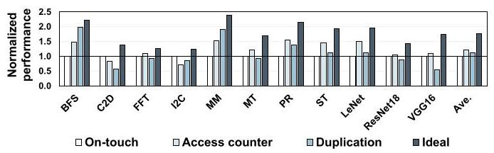
Fig. 2 是论文动机的核心证据。横轴是 11 个应用，纵轴是相对 on-touch 的 normalized performance；on-touch、access counter、duplication 的胜负关系随应用显著变化。例如 MM 更适合 duplication，ST 更适合 access counter，而一些 private-heavy 工作负载更接近 on-touch 的优势区间。这说明“统一采用一种策略”不是稳健解。
动机评估：动机是 solid 的。论文没有只停留在“不同应用不同策略”这个粗粒度事实，而是进一步把差异追到 object granularity：同一应用内部不同 object 的 private/shared、read/write pattern 不同；同一 object 的 pattern 还可能随 explicit phase 或 implicit phase 变化。实验覆盖 11 个代表性 multi-GPU workload，且后文用 GRIT 对比展示 per-page 学习的复杂度和额外 fault 开销，因此问题规模、工程约束和优化空间都比较清楚。
核心 Insight：页管理策略的收益不只由 page 本身决定，更常由其所属 object 的运行时访问模式决定。一个 object 内部大多数 page 往往呈现一致模式，且这种一致性在单个 phase 内稳定，因此系统可以用少量 object metadata 代替大量 per-page metadata：private object 保持 on-touch，shared-read-only object 用 duplication，shared-write / shared-rw-mix object 用 access counter，并在 phase 变化时重新学习。
二、相关工作
论文的相关工作可以分成三条线。
第一类是 multi-GPU runtime memory management。已有工作关注 UVM、page migration、remote caching、page duplication、oversubscription 等机制，目标都是降低 GPU 间非均匀访存开销。它们的问题在于通常围绕 page 或系统全局策略展开，没有把应用对象的语义信息纳入运行时决策。
第二类是 fine-grained dynamic page placement，代表是 GRIT。GRIT 在 per-page 粒度学习当前策略是否合适，并预测邻近 page 的策略。它比固定策略更灵活，但代价是每页 48 bits in-memory metadata、352 bytes on-chip PA-Cache，以及更多 page fault 触发的学习和调整。OASIS 的论点是：如果 object 内 page pattern 本来高度一致，那么 page granularity 既昂贵又没有必要。
第三类是 object-based optimization。过去的 object metadata 已用于 memory safety、bounds checking、range TLB / tagged pointer 等方向。OASIS 借用这条思路，但目标从安全或地址转换扩展到 multi-GPU page management。作者声称 OASIS 是第一篇把 object-level information 用于 multi-GPU page management decision 的工作，这一点和其设计主线一致。
静态分析和 cudaMemAdvise 也能给内存管理提供提示，但它们无法可靠判断对象在运行时到底是 private 还是 shared，也难以捕捉 phase 内部的隐式访问模式变化。因此 OASIS 选择 runtime detection，而不是依赖编译期或程序员提示。
三、技术挑战
挑战 1：不同 policy 的收益条件彼此冲突。 On-touch 对 private object 很好，因为第一次迁移后后续访问本地化；但对多 GPU 共享页会造成 ping-pong migration。Duplication 对 shared-read-only object 很好，但遇到写入会触发 write-collapse。Access counter 能缓解频繁迁移，但在真正应当本地化的 private page 上会引入远端访问等待阈值的延迟。
挑战 2：系统需要知道 object pattern，但不能破坏 UVM 的透明性。 如果要求程序员手工标注每个 object 的读写和共享属性，就会丧失 UVM 的易用性；如果每页学习，又会引入 GRIT 类设计的元数据和 fault 成本。OASIS 必须在“透明”和“低成本语义感知”之间找中间点。
挑战 3：object pattern 不是全程固定的。 C2D 这类应用有多个 CUDA kernel，对象在 Image-to-Column、GEMM、Matrix-Transpose 等 explicit phase 中角色不同；ST 甚至在单个 kernel 的循环里出现 implicit phase，两个 buffer 会在迭代之间交换读写角色。只在 allocation time 决策一次会过期。
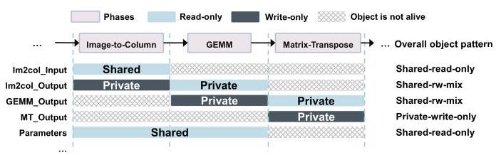
Fig. 6 展示了“全程看是 shared-rw-mix”的 object，在单个 phase 内可能其实是 private read-only 或 private write-only。它支撑了 OASIS 的 phase-aware reset 设计：策略必须能在 phase 边界重新学习，否则会把跨 phase 聚合后的混合模式误当成运行时真实模式。
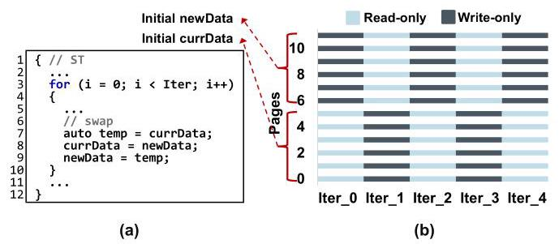
Fig. 7 更进一步说明，phase boundary 不总是 CUDA kernel launch 这种显式事件。ST 的两个数组每次迭代交换角色，导致前后半页的 read/write pattern 周期性反转。OASIS 因此需要一种不依赖显式 API 的 self-correction 机制。
挑战 4：object-level 决策可能被非均匀对象、large page 和 oversubscription 干扰。 如果一个 object 内部 page pattern 不一致，只看一个 page 可能误判；2 MB large page 会把原本 private 的 4 KB pages 合并成 shared-rw-mix；oversubscription 把 shared page eviction 到 CPU 后，也会干扰“根据物理地址范围判断 private/shared”的逻辑。
四、解决方案
整体思路
OASIS 的设计可以概括为三件事：在 allocation time 给 object 建立可追踪身份；在 runtime page fault 路径上用 object table 记录 shared object 的策略状态；在 explicit / implicit phase 变化时重置并重新学习 object policy。它不试图预测每个 page，而是假设一个 object 在同一 phase 内 page pattern 通常一致，从而用一个 object-level policy 覆盖该 object 的 page。
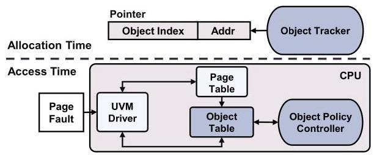
Fig. 8 把系统拆成 Object Tracker、Object Table 和 Object Policy Controller。Object Tracker 负责把 object identity 带进指针；page fault 到 CPU 后，UVM driver 先查 host page table 区分 private/shared，再把 shared object 的请求交给 Object Table 和 policy controller 处理。
贯穿示例
可以把一个 multi-GPU 程序想成有三个数组：A 是多个 GPU 只读共享的参数表，B 是每个 GPU 各写各的输出 buffer，C 是多个 GPU 反复读写的 frontier 或中间状态。如果系统统一用 on-touch，A 会被不同 GPU 拉来拉去；如果统一用 duplication，C 的写入会频繁 collapse；如果统一用 access counter，B 又会在初期承受不必要的 remote access。
OASIS 的做法是让 A/B/C 在 allocation 时得到 object ID。程序运行时，第一次访问 B 的 page 时 host page table 发现它仍是 private，于是直接保留默认 on-touch；当 A 被第二个 GPU 读到时，系统知道这是 shared-read，给它设 duplication；当 C 被共享写入时，系统给它设 access counter-based migration。下一次 kernel launch 或者 page fault 频率显示策略不合适时，OASIS 再把对应 object 的学习状态清空，让它按新 phase 的访问模式重新选择策略。
关键技术点
Object Tracker：用 pointer upper bits 标识 object。 OASIS 在 cudaMallocManaged() 外包一层 wrapper，在对象分配时把 Obj_ID 和配置位写入 64-bit pointer 的 unused upper bits。论文假设使用 5 个 upper bits，其中 4 bits 编码 object ID，1 bit 区分 OASIS 和 OASIS-InMem。这个设计依赖 NVIDIA GPU 和现代 CPU 上的 top-byte-ignore / address masking 类机制，使 dereference 不会因为高位 tag 出错。
Object Table：极小的 per-object 策略状态。 O-Table 是 host CPU 侧 on-chip LRU 结构，默认 16 entries。每个 entry 包括 4-bit object ID、1-bit policy、3-bit page fault counter 和 4-bit LRU bits，总共 12 bits；16 个 entry 只需 24 bytes。O-Table 只记录 duplication 和 access counter 两种非默认策略，on-touch 作为默认状态由 host page table 路径处理。
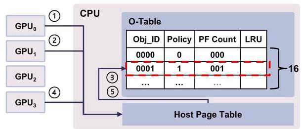
Fig. 11 展示了一个具体 fault flow：第一次 GPU 访问 page 时仍按 private/on-touch 处理；第二个 GPU 访问同一 page 后，host page table 判断它已经 shared，于是请求进入 O-Table；controller 根据读/写 fault 选择 duplication 或 access counter，并把 policy bits 写入相关 page table entry。
Object Policy Controller：用 fault 类型推断策略。 Controller 的策略规则很直接：private object 不进入 O-Table，继续用 on-touch；shared object 的读 fault 倾向 duplication；shared object 的写 fault 倾向 access counter-based migration。这个简单规则成立的前提是论文在动机部分建立的 Observation 2 和 4：同一 object 内 page pattern 一致，同一 phase 内 object pattern 稳定。
Self-Correction：处理 phase 变化。 OASIS 有两种 reset 触发方式。显式 phase 变化由 CUDA kernel launch 等 runtime event 触发，只把 O-Table entry 的 PF Count 清零，下一次 shared fault 重新学习策略。隐式 phase 变化由 shared page fault 的计数触发：默认 reset threshold 是 8，当某个 object 的 shared fault 太多，说明当前策略可能不再适合，就清零并重新学习。
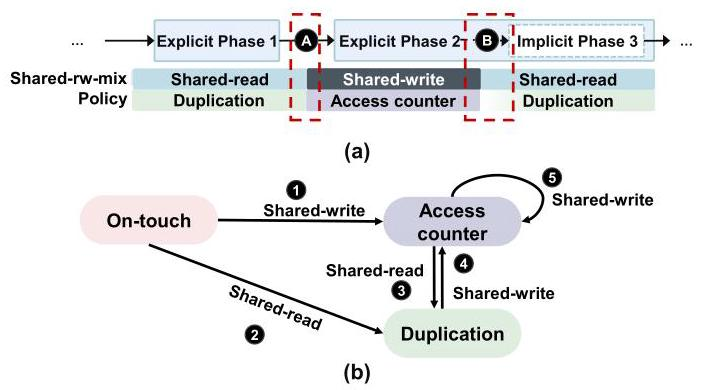
Fig. 13 是理解动态性的关键图。上半部分说明 explicit phase 边界和 implicit phase 中的异常 fault 都能让策略从 shared-read/duplication 切到 shared-write/access-counter，或反过来切回 duplication。下半部分的状态机也揭示了一个重要简化：策略一旦从 on-touch 切到 shared 策略，就不主动切回 on-touch，因为如果对象后来变回 private，后续访问会本地化且不再产生 shared fault。
OASIS-InMem：软件可扩展替代方案。 硬件版受 upper pointer bits 和 O-Table 容量限制。OASIS-InMem 不在 pointer 中编码 Obj_ID，而是用 shadow map 从虚拟地址查 object ID，并把 O-Table 放在系统内存。代价是两级 shadow map 的内存开销，例如 64 GB 分配空间、N=16 时约 160 MB，但作者认为 CPU LLC 可以缓存这些表访问，因此性能只比硬件版低约 2%。
与已有方案的对比
相对固定策略，OASIS 的优势是按 object 区分 private、shared-read 和 shared-write 模式，避免“一种策略服务所有数据”。相对 GRIT，OASIS 的优势是粒度更粗、元数据更少、策略调整更快：GRIT 每页 48 bits in-memory metadata 和 352-byte PA-Cache，OASIS 每 object 12 bits、默认硬件 O-Table 24 bytes；GRIT 需要 per-page fault 来改变策略，OASIS 用每 object 的少量 fault 进行 reset。
不足也比较明确。第一，它依赖 object 内 page pattern 大体一致；如果对象内部混杂严重，单页推断会变弱。第二，硬件版依赖 pointer upper bits 和 runtime/API 修改，和已有 pointer tagging、安全扩展可能冲突。第三，OASIS-InMem 虽然软件化，但 shadow map 和 UVM driver / kernel 修改仍不是“即插即用”的真实系统实现，论文只给了模拟验证。
五、实验评估
实验设定
作者使用 industry-validated MGPUSim simulator，默认 4-GPU 平台，每个 GPU 有本地 page table 和 GMMU。基础配置包括 1.0 GHz、每 GPU 64 compute units、4 GB DRAM、4 KB page、access counter threshold 256、300 GB/s NVLink-v2 和 32 GB/s PCIe-v4。论文还评估 8/16 GPU、large input、2 MB pages、initial GPU placement 和 oversubscription。
Benchmark 包含 11 个应用，来自 AMDAPPSDK、Hetero-Mark、SHOC 和 DNN-Mark：BFS、C2D、FFT、I2C、MM、MT、PR、ST、LeNet、VGG16、ResNet18。访问模式覆盖 random、adjacent、scatter-gather，object 数从 2 到 263，memory footprint 约 20 MB 到 300 MB。Baseline 是统一采用 on-touch、access counter-based migration、duplication；还与 state-of-the-art GRIT 比较。
主要实验与结论
总体性能：OASIS 相比统一 on-touch、access counter、duplication 平均分别提升 64%、35%、42%，并且多数应用接近 ideal。提升来自两类能力：单 phase workload 中能识别 object 的合适策略，例如 MM 中 MM_A/MM_B 用 duplication、MM_C 用 on-touch；多 phase workload 中能重新学习，例如 C2D 的 explicit phases 和 ST 的 implicit iterations。
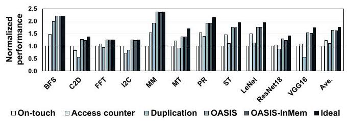
Fig. 15 显示 OASIS 对大多数应用都接近或达到 ideal bar，而固定 policy 有明显短板。图中 OASIS-InMem 只比 OASIS 平均低 2%，说明把 object lookup 软件化后，核心策略仍然有效。
阈值敏感性：reset threshold 取 4、8、32 时，相对 on-touch 的平均提升分别为 55%、64%、56%，作者选择 8 作为默认值。阈值太低会让 shared-rw-mix object 在 duplication 和 access counter 之间波动，造成 collapse 开销；阈值太高会延迟 phase change 后的策略调整。
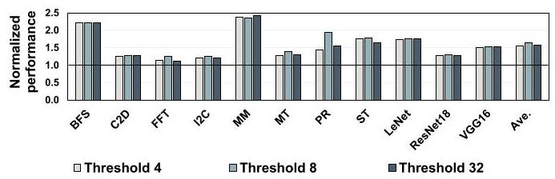
这张图表明 OASIS 不是对阈值完全不敏感，但默认值 8 是合理折中。对只读或 private-heavy 应用，阈值影响小；对 shared-rw-mix 和 phase-shifting 应用，阈值会直接影响自校正速度和误切换成本。
GPU 数量扩展：在 8-GPU 和 16-GPU 系统上，OASIS 相对 on-touch 分别提升 65% 和 67%。作者按 GPU 数扩大 workload size，结果说明 object-level pattern 没有因为 GPU 数增多而失效。
输入规模和大页：使用 16-GPU input size 在 4-GPU 系统上测试，OASIS 平均提升 62%，说明对象变大不破坏 object-level tracking。使用 2 MB page 时平均提升降到 43%，原因是 large page 会把原本分散的 private 4 KB pages 合并成 shared-rw-mix，降低理想化本地访问空间。
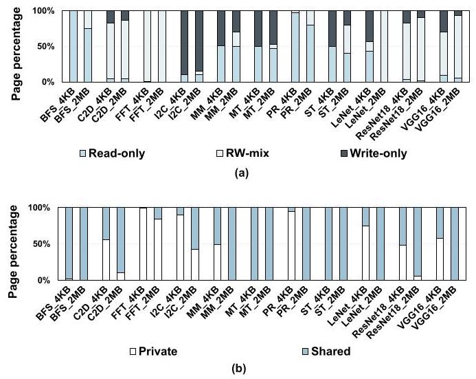
Fig. 20 给出了 large page 退化的机制证据：更大的 page granularity 提高了 shared/rw-mix page 占比。这个结果也提醒读者，object-level 管理不是越粗越好；page size 仍会影响对象内部模式的一致性。
与 GRIT 对比：OASIS 相比 GRIT 平均提升 12%，并减少 22% page faults。论文把原因归结为更少 metadata、更小 on-chip structure、更少 per-page reset，以及无需 neighboring page prediction。
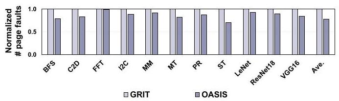
Fig. 24 是“更简单还能更快”的关键证据之一。Page fault 每次都涉及 CPU interrupt 和 UVM 处理，OASIS 减少 22% fault 说明它不只是节省存储，也减少了运行时控制路径开销。
Oversubscription：在模拟 150% memory oversubscription 下，OASIS 相对 on-touch 仍有 20% 平均提升。作者也承认 oversubscription 本身很昂贵，会吞掉不少 OASIS 带来的收益；他们通过 PTE policy bits 辅助判断 evicted-to-CPU 的 shared page，避免误判为 private。
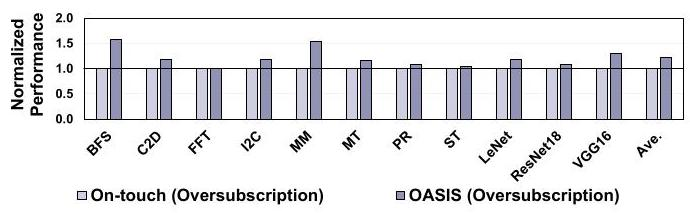
结论支撑性分析
实验基本支撑论文主张：OASIS 对固定策略的提升、对 GRIT 的性能和复杂度优势、OASIS-InMem 的可行性、以及对 GPU 数和输入规模的扩展性都有对应数据。最强的论证链是“object pattern 观察 -> object-level 策略设计 -> 总体性能与 GRIT 对比”。
不过也有边界。所有结果来自 simulator，而不是真实 NVIDIA UVM driver 和 CUDA runtime 修改后的系统；memory footprint 为了仿真时间限制控制在 20-300 MB，虽然作者指出与 prior work 类似，但离真实训练或 HPC 工作负载仍有差距；软件版 OASIS-InMem 只是 proof-of-concept simulation，真正驱动和 kernel 集成的工程复杂度没有被完整评估。
六、附加洞察
结论 1：object granularity 的有效性来自“对象内 page pattern 高度一致”，但论文也承认它不是绝对规律。
出处：Section IV-B，Fig. 3 和 Fig. 4。
推理链条：作者先统计 object size，发现大多数 object 覆盖多页，object-level 决策能摊薄 per-page metadata；再用 MT 展示 MT_Input 几乎全 read-only、MT_Output 几乎全 write-only；随后对 7 个单 explicit phase 应用统计，26 个 object 中只有 2 个 non-uniform，7 个应用中只有 ST 作为 non-uniform app，且非均匀页少于 5%。这个链条支撑 object-level 推断，但薄弱点是样本来自 11 个 benchmark，不能保证所有真实应用都有同样的一致性。
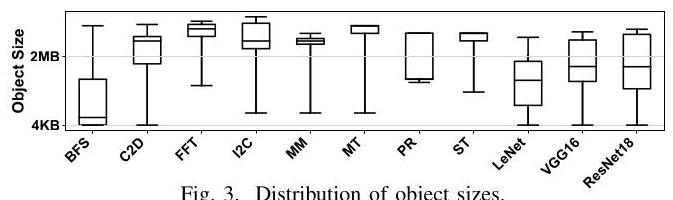
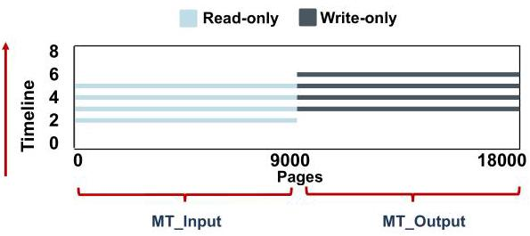
结论 2：OASIS 选择不从 shared policy 主动切回 on-touch，是一个基于 fault 可见性的简化。
出处：Section V-D，Fig. 13(b)。
推理链条：一旦 object 变成 shared，OASIS 只在 shared page fault 上维护 O-Table；如果之后 object 变回 private，数据最终迁移或复制到当前 GPU，本地访问不再产生 fault，因此系统缺少强信号去“证明它又 private 了”。作者据此认为主动回到 on-touch 没必要。这个结论很工程化：它减少状态机复杂度，但也意味着 OASIS 更关注避免 shared 场景的坏策略，而不是恢复语义上最精确的状态。
结论 3：large page 会削弱 OASIS 的收益，不是因为 OASIS 失效，而是因为 page granularity 改变了可观察 pattern。
出处：Section VI-B4，Fig. 19 和 Fig. 20。
推理链条：OASIS 假设 object 内 page pattern 能指导 policy；2 MB page 会把原本分别 private 的小页合并为一个 shared page，使对象更容易表现为 shared-rw-mix；而 shared-rw-mix 无法像 private/on-touch 或 read-only/duplication 那样接近 ideal。因此性能提升从默认结果的 64% 降至 43%。这说明 object-aware 并不完全替代 page granularity 的重要性。
结论 4：OASIS-InMem 的主要价值不是性能最好，而是给 pointer tagging 受限环境提供兼容路径。
出处：Section V-F 和 Section VI-A。
推理链条：硬件 OASIS 使用 upper pointer bits 编码 object ID，可能与 memory tagging、LAM/UAI/TBI 约束或其他安全机制冲突；OASIS-InMem 改用 shadow map 查 object ID，牺牲一些 memory lookup 开销，换来不改 pointer high bits 和支持更多 object。实验显示它平均只比 OASIS 慢 2%，说明论文真正想保留的是 object-aware policy，而不是某一种特定编码方式。
七、总结与评价
OASIS 的核心贡献是把 multi-GPU UVM page management 的决策粒度从 page 提升到 runtime object，并用 phase-aware self-correction 处理对象访问模式变化。它的设计很克制：Object Tracker、O-Table、OP-Controller 都围绕一个简单映射展开，即 private 用 on-touch、shared-read 用 duplication、shared-write 用 access counter。
最大亮点是找到了一个比 per-page 更便宜、又比全局固定策略更有表达力的粒度。24-byte O-Table、12-bit per-object entry 和 12% over GRIT 的结果，让论文的“低复杂度”主张比较有说服力。最大不足是实现验证停留在 simulator，真实 UVM driver、CUDA runtime、pointer tagging 兼容性和大规模 workload 的工程成本仍然需要后续系统实现来检验。
从后续研究角度看，OASIS 值得继续探索三件事：更鲁棒地处理 non-uniform object；结合编译期/运行时信息识别 implicit phase，而不只依赖 fault threshold；在真实 NVIDIA 或 AMD multi-GPU UVM 栈上验证 OASIS-InMem 的 driver 和 kernel 修改成本。
八、章节脉络与段落速览
- Section I · Introduction：提出 UVM multi-GPU 的固定 page policy 无法适配不同 object 和 phase，并概述 OASIS 的 object-aware 方案。
- ¶1：说明 multi-GPU 和 UVM 的价值，以及 UVM 下跨 GPU 数据共享带来的 NUMA overhead。
- ¶2：介绍 on-touch、access counter 和 duplication 三种现有 page management policy 及各自代价。
- ¶3：指出当前系统通常统一采用一种策略，但不同数据类型需要不同策略。
- ¶4：用 GRIT 引出 per-page 学习的成本和复杂度，明确 OASIS 追求更简单方案。
- ¶5：提出 object granularity 作为透明性和效率之间的折中。
- ¶6：概括 object sharing characteristic 到 policy 的映射，以及 OASIS 三个组件。
-
¶7：列出三项贡献：object-level characterization、OASIS 设计、11 个应用上的性能提升。
-
Section II · Background：介绍 UVM-enabled multi-GPU 架构和三种基础 page management policy。
- II-A ¶1：解释
cudaMallocManaged、CPU 侧 centralized page table、GPU local page table 和 page fault 处理流程。 -
II-B ¶1-3：分别说明 on-touch migration、access counter-based migration 和 page duplication 的机制与主要缺点。
-
Section III · Methodology：说明仿真平台、硬件配置和 benchmark 选择。
- III-A ¶1：使用 MGPUSim、4-GPU 默认平台，并说明会扩展到 8/16 GPU 和 large page 分析。
-
III-B ¶1：列出 11 个 benchmark、访问模式、object 数和 memory footprint，并解释仿真规模与 prior work 保持一致。
-
Section IV · Motivation and Characterization：用实验观察建立 object-aware policy 的必要性。
- IV-A ¶1：Fig. 2 表明三种固定 policy 没有任何一种能在所有应用上最优。
- IV-B ¶1：定义 private/shared、read-only/write-only/rw-mix object pattern。
- IV-B ¶2-4：通过 object size、MT page pattern 和 non-uniform object 统计说明 object granularity 通常有效。
- IV-B ¶5-7：用 I2C、MM、ST 对比说明 private、shared-read-only、shared-rw-mix 分别偏好不同 policy。
- IV-B ¶8-10：说明 object pattern 在 explicit phase 内稳定，但跨 C2D 的多个 phase 会变化。
-
IV-B ¶11-12：用 ST 的迭代交换说明 implicit phase 也会导致 read/write pattern 周期性变化，并总结动态策略需求。
-
Section V · OASIS Design：给出 Object Tracker、O-Table、OP-Controller、自校正和软件替代设计。
- V-A ¶1：总览 OASIS 三个组件和 phase-aware correction 目标。
- V-B ¶1-3：解释如何利用 upper pointer bits 编码 Obj_ID 和配置位，以及 pointer 重构过程。
- V-C ¶1：定义 O-Table entry 内容、PTE policy bits 和 16-entry/24-byte 的低开销结构。
- V-D ¶1-4：描述 host page table 过滤 private object、O-Table 处理 shared object，并用示例说明 fault flow。
- V-D ¶5-7：说明 implicit fault threshold 和 explicit kernel launch reset 两种 self-correction 方式，以及状态机。
- V-E ¶1：估算 O-Table 面积和 PTE policy update 开销，说明其可与 fault resolution 重叠。
-
V-F ¶1-2：提出 OASIS-InMem 的 shadow map / O-Table-InMem 方案，并估算最多约 160 MB shadow map overhead。
-
Section VI · Evaluation：验证总体性能、敏感性、GRIT 对比和 oversubscription。
- VI-A ¶1：OASIS 平均比 on-touch、access counter、duplication 提升 64%、35%、42%，并解释单 phase 与多 phase workload 中的收益来源。
- VI-A ¶2：OASIS-InMem 平均只比硬件 OASIS 低 2%，但真实软件实现留作 future work。
- VI-B1 ¶1：reset threshold 4/8/32 分别带来 55%/64%/56% 提升，默认 8 是折中点。
- VI-B2 ¶1：8-GPU 和 16-GPU 下分别提升 65% 和 67%，说明 GPU 数扩展不破坏 object pattern。
- VI-B3 ¶1：large input 下平均提升 62%，说明对象变大仍能被有效跟踪。
- VI-B4 ¶1：2 MB page 下提升降到 43%，原因是 shared/rw-mix page 比例上升。
- VI-B5 ¶1：初始页放在 GPU 上时仍提升 57%，说明对初始 placement 不敏感。
- VI-C ¶1-2：相对 GRIT 平均提升 12%，并用更少 metadata、24-byte O-Table 和 22% page fault reduction 解释原因。
-
VI-D ¶1：oversubscription 下用 PTE policy bits 避免 shared page 误判，并取得 20% 平均提升。
-
Section VII · Related Work：把 OASIS 放到 object optimization、multi-GPU memory management 和 static hinting 三类工作中定位。
- ¶1：说明 object metadata 曾用于 memory safety 和 TLB 优化，但 OASIS 首次用于 multi-GPU page management。
- ¶2：说明既有 multi-GPU 优化没有关注 runtime object pattern。
-
¶3：说明 static analysis 和
cudaMemAdvise无法判断运行时 private/shared，因此不足以替代 OASIS。 -
Section VIII · Conclusion：总结 object-level characterization、OASIS 动态策略和实验收益。
- ¶1：重申 object pattern 和 phase variation 影响 page policy 效果，OASIS 通过动态 object tracking 获得 64%/35%/42% 固定策略提升和 12% over GRIT。